需求部
像团队的“项目引路人”，负责发现问题、整理想法、对接需求，把零散诉求变成可以真正推进的任务。
01
比“学技术”更进一步，我们希望做一个真正有作品、有氛围、有归属感的社团团队
软件开发组面向所有对数字化建设、技术实现、创意表达和项目协作感兴趣的同学开放。 在这里，你可以把“想学一点”变成“真的做出来”，把“个人兴趣”变成“团队共创”， 也能把自己的能力真正投入到社团内容建设与实际使用场景中。
我们强调的不只是会不会写代码，而是能不能在协作中承担任务、解决问题、留下成果。 无论你更偏开发、数据、算法、产品、内容整理还是项目推进，都可以在这里找到适合自己的位置。
核心定位 我们是艺术团舞美部中偏“技术 + 创意实践”的团队，服务社团实际需求，也鼓励成员围绕校园场景做自己的项目。 这里既有社团协作的温度，也有项目落地的节奏。
愿意主动了解方向、尝试新东西，而不是只停留在“我看看”。
愿意为团队任务付出时间，把一次参与做成一次真实经历。
愿意沟通、愿意配合、愿意在项目里和别人一起把事情完成。
允许自己从零开始，但不长期停留在观望状态。
最终用代码、文档、设计、分析、测试或项目推进来证明自己的价值。
02
不是松散分工，而是一支能彼此配合、共同把事情做成的社团团队
像团队的“项目引路人”，负责发现问题、整理想法、对接需求，把零散诉求变成可以真正推进的任务。
像团队的“实现中枢”，负责把页面、系统、功能和工具真正做出来，让创意从想法变成可用成果。
像团队的“创意策源地”，负责调研、建模、算法与方案探索，为项目带来更强的思路深度和创新空间。
部门之间的关系 需求部不是“辅助组”，技术部不是唯一核心，智研部也不只是查资料。 三部门分别承担问题定义、方案研究和工程交付职责，共同构成完整项目链路。
03
从一个想法、一条需求，到真正上线、真正可用、真正留下成果
组织、社团与使用者提出问题
调研、梳理、形成需求清单
检索文献、建模、论证方案
开发、测试、部署与维护
系统、开源、竞赛、论文与专利
收集使用反馈，进入下一轮优化
以真实问题为起点，以可交付成果为终点；每个部门都有独立价值，也必须在项目中协同。
说明需求来源、目标用户、核心问题、预期成果和计划周期。
将项目拆分为需求、研究、设计、开发、测试、部署、文档等可交付任务。
在需求确认、原型完成、核心开发、上线验收等节点进行评审。
保留需求文档、会议结论、代码提交、实验记录、测试记录和版本说明。
明确团队项目、成员个人作品和合作项目的归属，不将个人既有作品包装为团队成果。
上线不是结束，应记录使用反馈、问题修复和后续迭代。
成员参与方式 成员可根据能力、兴趣和时间条件参与不同环节。技术兴趣发生变化的成员，可以转向需求分析、项目协调、 测试验收、内容维护和文档建设；沟通能力较强的成员可承担需求对接与项目推进；喜欢安静钻研的成员可进入 算法、智研、数据或技术研发任务。方向调整不等于降低要求，所有岗位都需要明确产出和按时交付。
04
不管你偏开发、偏创意、偏研究还是偏数据，都能在这里找到适合自己的方向
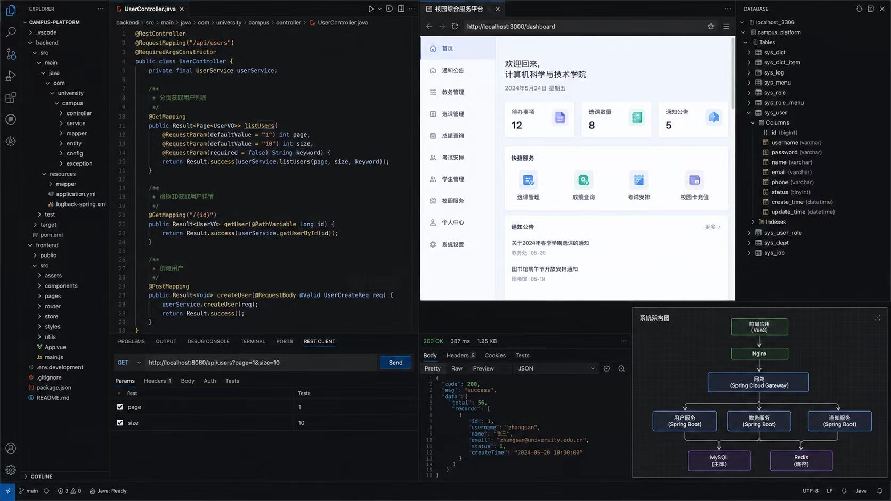
前端、后端、数据库、测试、系统设计与部署
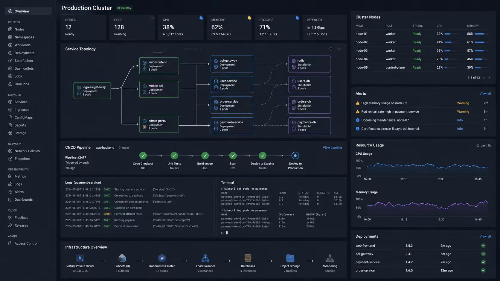
数据采集、清洗、统计分析、可视化、数据仓库与挖掘
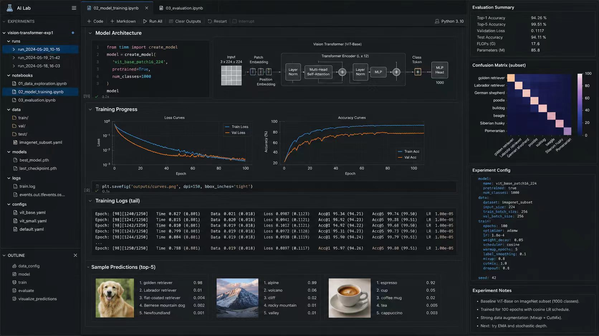
文本、视觉、小样本学习、模型微调与算法实现
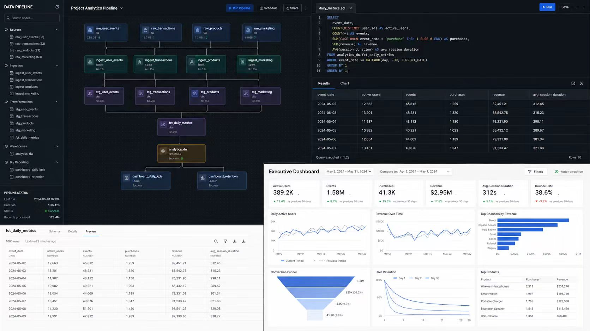
Linux、Docker、Kubernetes、Nginx 与系统运维
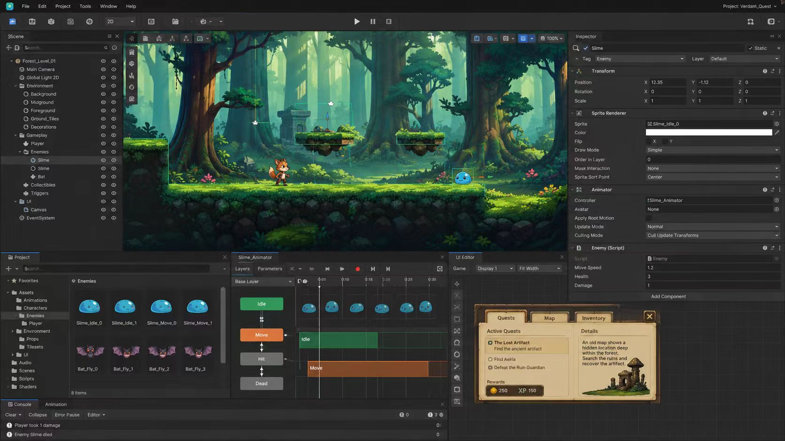
HTML5 原型、Godot、Unity、Three.js 与交互设计
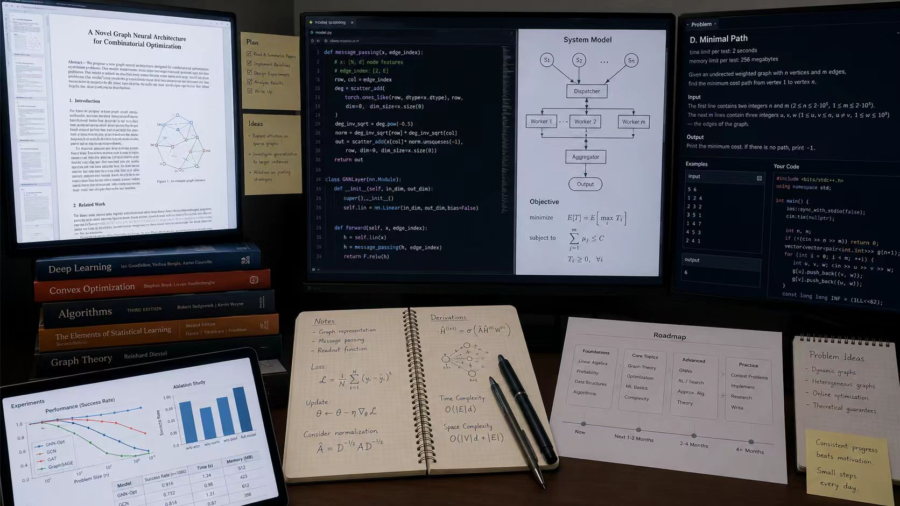
论文阅读、系统建模、算法复现、专利与竞赛训练
05
这些不是停留在纸面上的设想，而是正在推进、可参与、能留下作品的真实项目
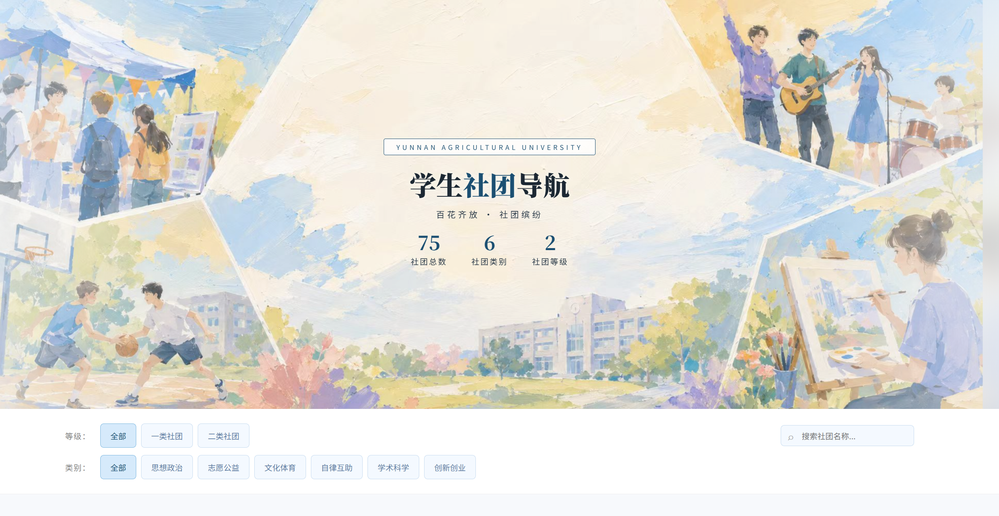
围绕校内社团展示、内容传播与形象建设需求，完成从策划到上线的完整流程。参与这个项目，你能直观看到自己的工作被真正使用。
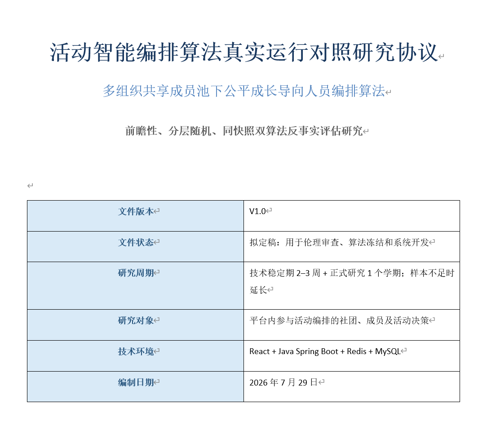
围绕活动安排、人员协作、成长记录和资料整理等社团高频场景，建设真正能减轻日常管理压力的数字化工具。
06
这些作品说明：这里的成员不是“空有兴趣”，而是真的能把想法做出来的人
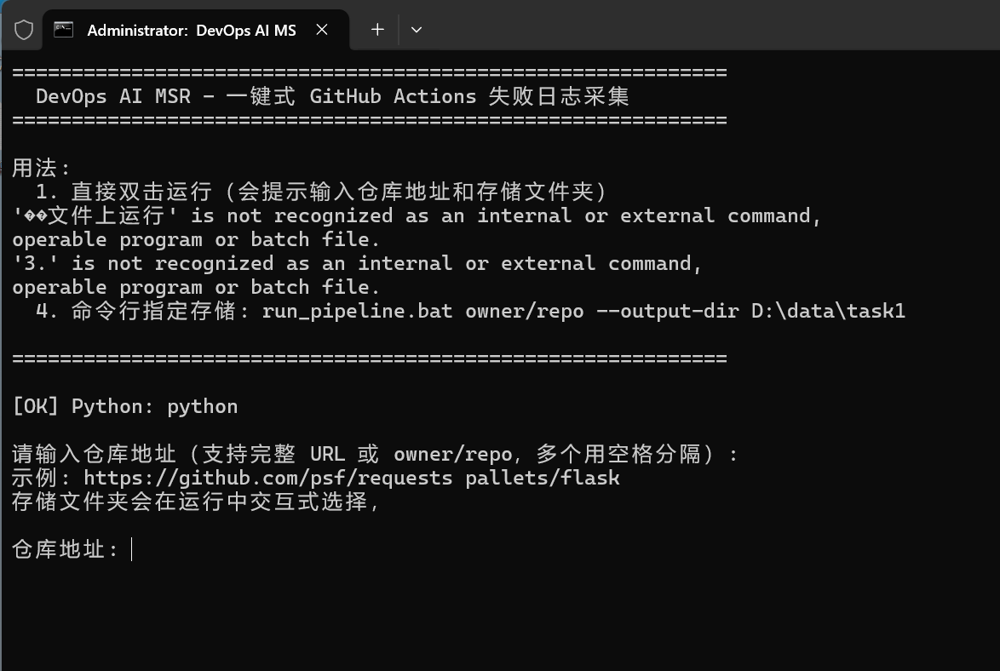
面向软件仓库的持续集成 / 持续交付数据采集开源工具。
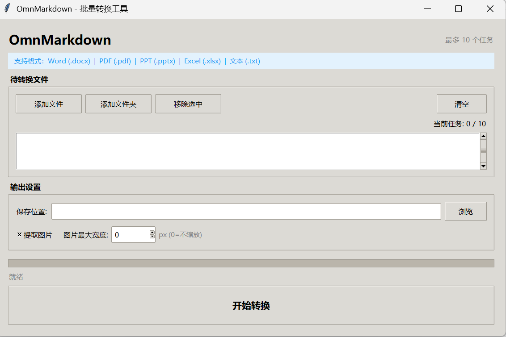
支持图片、文字颜色、摘要等内容的多格式转换工具。
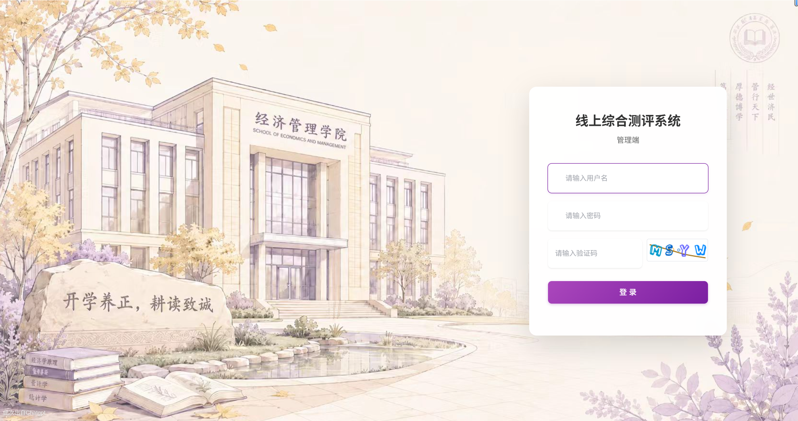
服务学院综合测评流程的线上管理系统。
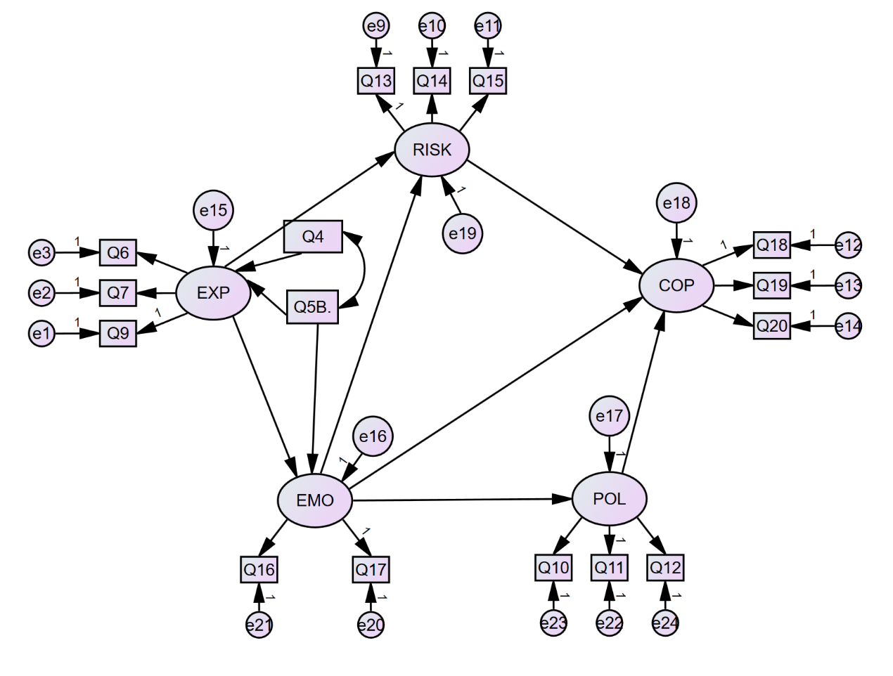
基于结构方程模型的建模与验证分析实践。
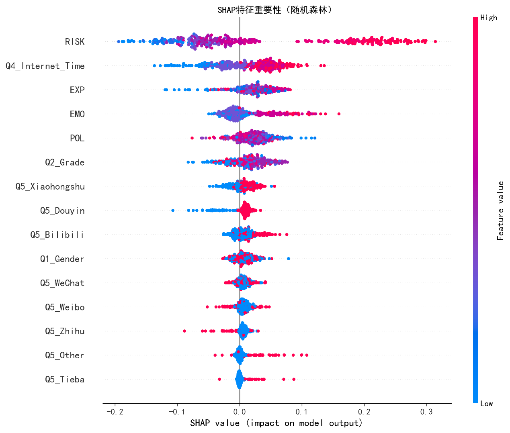
基于随机森林算法的特征重要性与预测分析。
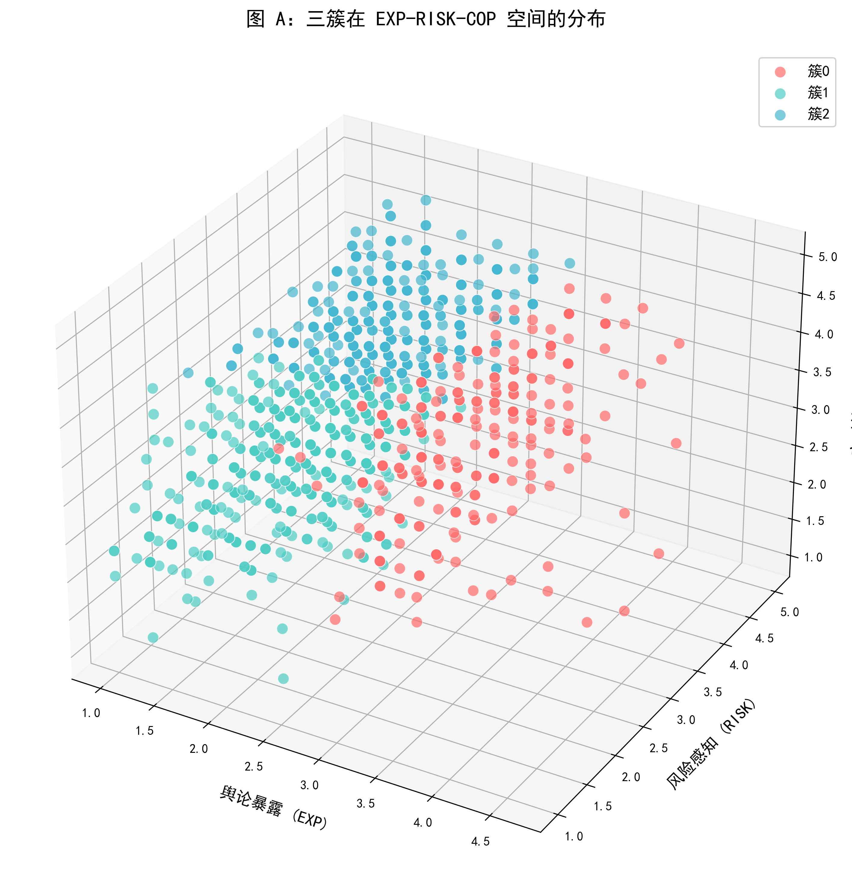
无监督聚类方法在真实数据集上的分析应用。
07
不要求你一开始就很强，但希望你愿意投入、愿意协作，也愿意把兴趣变成作品
适合善于表达、整理和沟通推进的同学
你可以参与项目需求整理、页面内容策划、资料收集、活动记录和对接沟通，让团队输出更贴近真实场景。
优先看重：责任心、表达能力、执行推进
适合喜欢写代码、搭页面、做功能的同学
你可以参与前端页面、后端逻辑、数据处理、部署维护等工作，把社团想法一步步变成真的产品和工具。
优先看重：学习意愿、实现能力、交付意识
适合喜欢钻研、建模、分析和探索新技术的同学
你可以参与算法、数据分析、模型应用、方案论证和成果整理，让团队不仅能做出来，也能做得更有深度。
优先看重：思考能力、研究兴趣、持续投入
我们想找的，不只是“已经会的人” 更重要的是：你愿意来、愿意学、愿意做，也愿意和一群同样认真做事的人长期并肩。
08
加入之后，不只是参与活动，而是逐步形成自己的项目经历与作品积累
成果说明 团队提供项目、条件、指导和申报渠道，但不承诺加入后自动获得论文、专利、证书或竞赛奖项。 所有成果以真实投入、实际贡献和正式审核结果为依据。